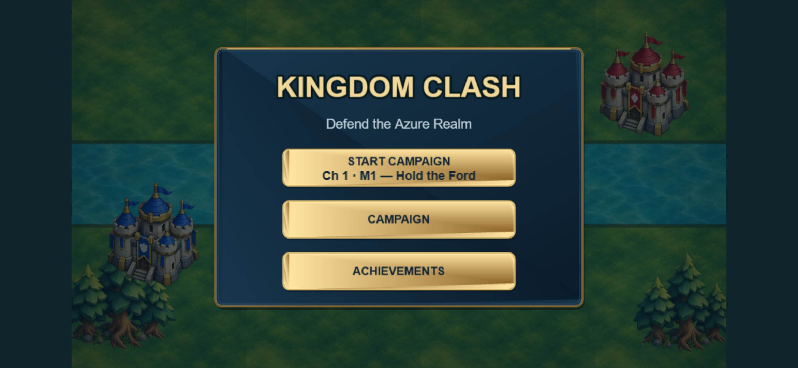
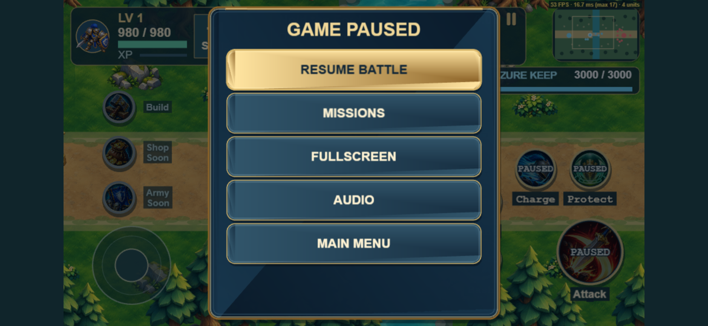
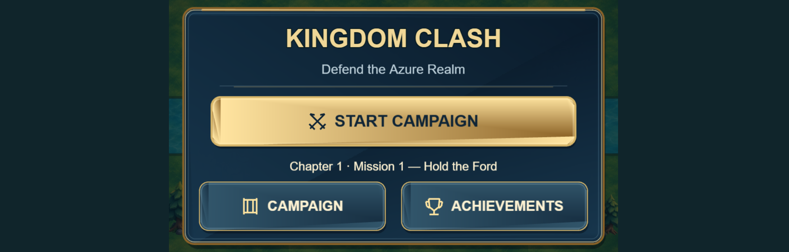
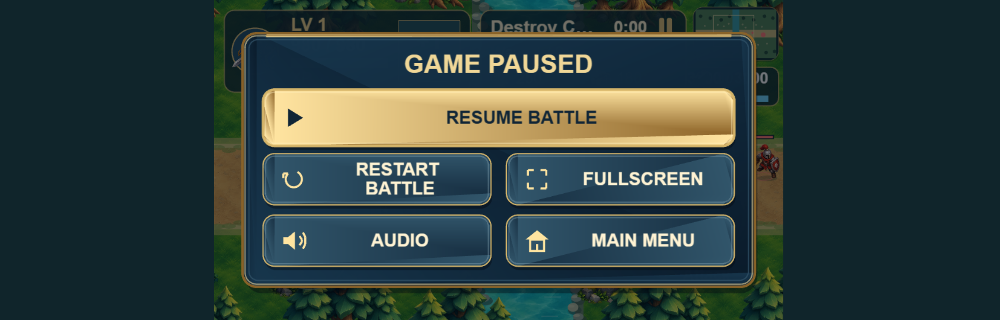

Local visual review only. Screenshots show a 780×360 CSS viewport at DPR 3. The original background artwork is preserved. New marks are simple Phaser vector drawings. No commit, push, merge or deployment.





Fullscreen text reflects the actual browser state: FULLSCREEN or EXIT FULLSCREEN. Quick Play keeps Restart Battle; campaign keeps Missions or Chapter Select according to its existing return destination.